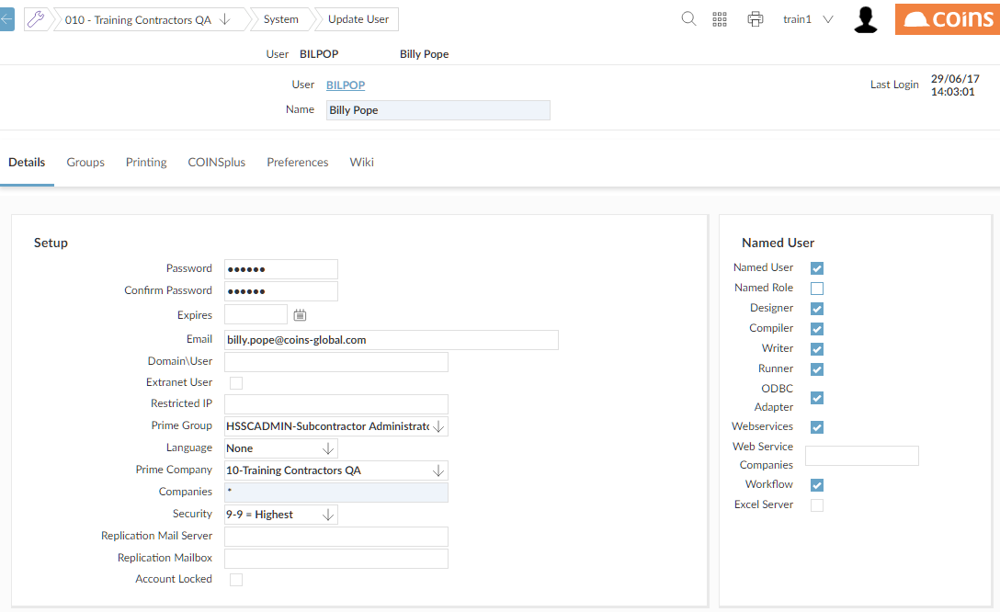

Granting or Denying OA Access to Individual Users
To access the user must be assigned as a Named User (the Named User flag reflects the GUI Client flag on theUser Details screen).

Each of the additional options can only be granted to a total number of users which equals the current Licensed Users for each on the branding screen, that is, these operate on a 'named user' basis rather than on a concurrent basis.
- Designer -- Access to Page Designer and Report Designer.
- Writer -- Access to Report Writer.
- ODBC Adapter -- Access to - Application Adapter
- Webservices -- Access to - Webservices
Alternatively, you can use Named Users to update the Named User flag and the additional options for all users.